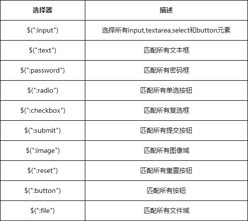

jQuery中专门加入了表单选择器，从而能够极其方便地获取到某个类型的表单元素

除了表单元素选择器外，表单对象属性筛选选择器也是专门针对表单元素的选择器，可以附加在其他选择器的后面，主要功能是对所选择的表单元素进行筛选
选择器适用于复选框和单选框，对于下拉框元素, 使用 :selected 选择器
在某些浏览器中，选择器:checked可能会错误选取到option元素，所以保险起见换用选择器input:checked，确保只会选取input元素